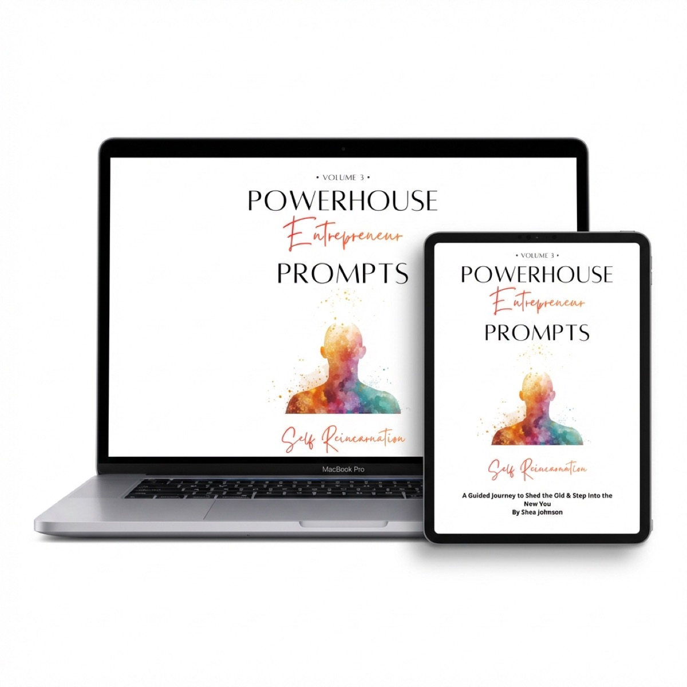

I created Volume 3 because I went through a time in my life where I was transforming…
and I didn’t even know it.
For years, I was just surviving.
Pushing through.
Trying to make sense of a world that felt chaotic and overwhelming.
It wasn’t until later, as I grew, that I realized what was actually happening.
I was transforming myself from the inside out.
The labyrinth of craziness I thought I’d been dropped into?
It was actually an obstacle course.
Every challenge. Every setback. Every confusing twist.
They were all shaping me.
Some lessons were brutal.
Some were beautiful.
But every single one was turning me into someone new.
I’ve been transforming in every sense of the word.
Even my physical appearance has changed in ways that shock and surprise me sometimes.
But I’m grateful.
Grateful it happened.
Grateful I kept going.
Grateful I became someone I didn’t know I could be.
Volume 3 holds the questions I wish someone had asked me during my own transformation.
They would have helped me see what was happening sooner…
and trust the process more.
What happens inside…
You upload one file to Claude or ChatGPT.
You say hello.
And an AI guide walks with you through five phases, at your pace.
Honoring who you’ve been, and letting that version of you go.
Sitting in the in-between, where nothing feels solid yet.
Facing the wound that’s been quietly running your life.
Designing who you’re becoming, on purpose.
And protecting it when the old you tries to come back.
It’s the deepest volume in the series, so it’s built with care.
You can pause anytime, skip anything, and go at your own pace.
It’s a companion to professional support, never a replacement for it.
At the end, it hands you something written only for you…
including one sentence of truth to carry with you.
How to begin…
It’s a guided PDF. No setup needed.

If you’re reading this, you probably already know.
The person you’ve been isn’t the person you’re meant to be.
You’re not stuck. You’re becoming.
With fierce belief in you,
— Shea
AI Business Coach | mssheajohnson.com